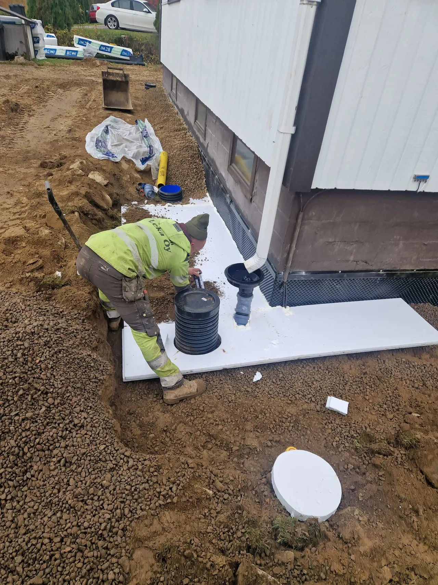

Kaikki
maansiirtotyöt
saman katon alta
Maanrakennusta, kaivinkoneurakointia ja pihatöitä. Heinolan Leka hoitaa hommat pohjasta alkaen.

PALVELUT
Kun tarvitaan
tekijää ja konetta.
Pihatöistä maanrakennukseen, asfaltointeihin ja kuljetuksiin. Rakennusalan työt onnistuvat yhteistyökumppaniemme kanssa.

Maanrakennus
Pohjatyöt, kaivuut, putkikaivannot, täytöt ja tasaukset. Kestävä lopputulos lähtee maan alta.
Tutustu palveluun
Kaivinkoneurakointi
Kaivinkonetyöt, ojitukset ja salaojat kohteen tarpeisiin sopivalla kalustolla.
Tutustu palveluun
Piha- ja ympäristötyöt
Pihan pohjatyöt ja maanmuotoilut sekä multaukset, istutukset, kuori- ja kivikatteet.
Tutustu palveluunMYÖS NÄMÄ HOITUVAT
Pohjat, pinnat ja kuljetukset.
Vesi- ja viemärityöt
Vesi- ja viemärityöt sekä salaojat kohteen tarpeiden mukaan.
Tutustu palveluunAsfaltoinnit
Pihojen ja kulkuväylien asfaltoinnit pohjatöistä alkaen.
Tutustu palveluunRakennusalan työt
Rakennustyöt, valut ja muuraukset yhteistyökumppaniemme kanssa.
Tutustu palveluunMaa-ainesten kuljetukset
Maa-ainekset perille sekä kuoppien täytöt ja muut täyttötyöt.
Tutustu palveluun
HEINOLAN LEKA
Paikallinen tekijä.
Huolellinen jälki.
Toimiva piha ja kestävä rakennuspohja syntyvät huolella tehdystä työstä. Käymme kohteesi tarpeet läpi ja sovimme toteutuksesta ennen töiden aloittamista.
Työ kohteen mukaan
Valitaan työn tarpeisiin sopiva toteutus ja kalusto.
Selkeästi sovittu
Käydään työn sisältö ja aikataulu yhdessä läpi.
ALOITETAAN SINUN KOHTEESTASI
Onko sinulla
työ mielessä?
Kerro mitä tarvitset ja missä kohde sijaitsee.
Suunnitellaan työlle sopiva toteutus.